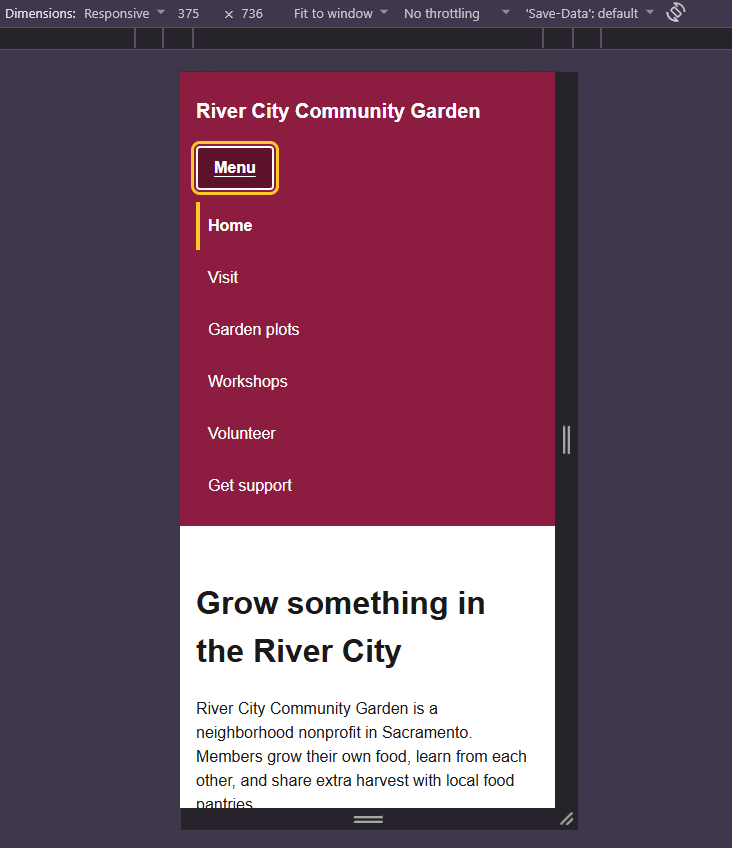
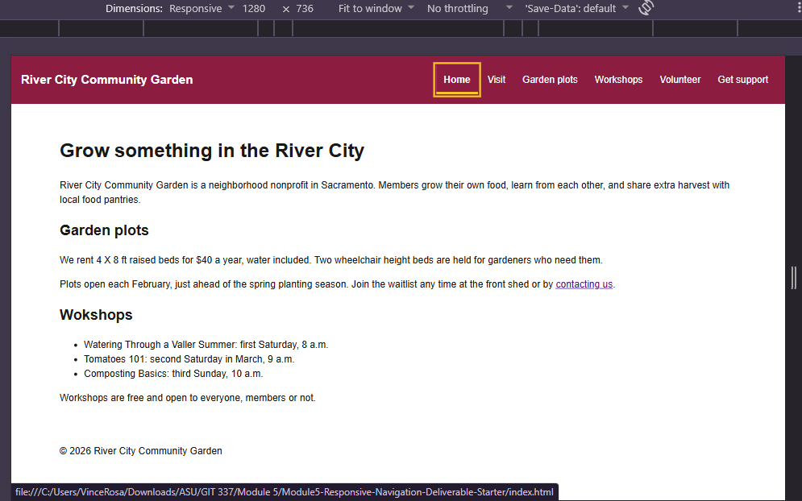

Student: Vincent Rosa Site: River City Community Garden, a ficitional Sacramento community garden nonprofit. The site helps visitors find hours, rent a plot, attend workshops, and get help.
| Destination | Final label | Order/group rationale |
|---|---|---|
| index.html | Home | First, The brand link also returns here. |
| visit.html | Visit | Hours and location are what most visitors need before anything else, so ti comes right after home. |
| index.html#plots | Garden plots | Renting a plot is the main reason people join. "Garden plots" is clearer than just plots. |
| index.html#workshops | Workshops | Grouped next to Garden plots since both are about participating in the garden. |
| support.html#volunteer | Volunteer | Getting involved path. Placed before "Get support" so the two support.html links sit together. |
| support.html | Get support | Last position is where visitors usually look for help and contact info. |
Method and widths tested: In Chrome DevTools, I started the narrow layout at 320px and widend in small steps. Then I temporarily forced the wide layout on and narrowed slowly from 1280px to find where it broke. Checked widths 320, 480, 640, 768 up to 1280.
First content failure: At 888px, Get support wrapped to a second row under the other links.
Chosen breakpoint in relative units: 56em. That's the failure width dived by 16 and rounded up. so the wide layout only turns on once all six links and the brand fit on one row room to spare.
Long-label and zoom retest: Changed two of the nav labels to "Plan your Garden Visit" and "Request Community Garden support". The wide layout at 1189px could no longer fit every link on one row. Request Community Garden support wrapped to a second row under the other links, and the brand wrapped to two lines. Nothing was clipped or overlapped because of flex-wrap. Below 56em tested at 888px the page switched to the narrow menu and all six links stacked cleanly, including the long ones. At 200% zoom on a 1280px window the page switched to the narrow layout with the Menu button.
Repair: None needed. The wrap is an acceptable fallback for unusually long lables, and the real labels fit on one row about 56em. Reverted the labels after testing.
| Condition | Expected | Observed | Result and repair |
|---|---|---|---|
| Keyboard: button, Tab, Escape, focus | Tab reaches the skip link first and it becomes visible. Enter and Space both toggle the menu. Tab reaches every visible link. Escape closes the open menu and focus returns to Menu. Closed-menu links are skipped. Should have a visible gold outline when focused. | Tabbing through revealed the skip link first, then the brand button, then the nav links in order, then main. The skip link moved focus to main. Home showed the correct page and each element that was focused had the gold focus outline. | Pass |
| Pointer/touch targets | Menu button should be at least 44px tall and wide. Each link needs to be about 48px tall with padding. Hover should show a darker background and underline. | Menu button was 44px tall and wide. Each link was 48px tall with padding and Hover showed a darker background with a visible underline. | Pass |
| 320px and breakpoint region | At 320px there should be no horizontal scrolling, no clipped text or focus outlines, brand and button should not overlap. Around the breakpoint the layout should switch cleanly with now crowded state. | At 320px there was no horizontal scrolling or clipped text. The brand and button did not overlap. At the breakpoint the layout switched cleanly. | Pass |
| 200% zoom | The Header should reflow to the narrow layout. Every link should be reachable through the menu. Text should be readable and focus will stay visible. | Header reflowed to the narrow layout. Every link was reachable through the menu. Text is readable and the focus stayed visible. | Pass |
| JavaScript unavailable | Menu button should stay hidden, and all six links will be visible at every width. | Menu button was hidden, and all links were visible regardless of width. | Pass |
| CSS unavailable / wide recovery | Without CSS the skip link, brand, nav links, and main content should read in logical order and all links should work. For Wide recovery, after opening and closing the menu at a narrow width, when widening past the breakpoint it should still show every link. | Without CSS, All links, brand, nav links and main content read in order. Each link worked as intended. Wide recovery, when the menu was opened and closed at a narrow width then widedn past the breakpoint. It continued to show every link. | Pass |
Screenshot filenames and what each proves: narrow-menu-open.png shows the narrow layout
with the menu open, every link stacked and readable, and the current page marker visible. wide-navigation.png
shows the wide layout with all six links in one row next to the brand and no Menu button.


Tester relationship (no name needed): Brother
Two tasks attempted: Find what time the garden opens on a summer morning. Find out how you could volunteer. Did not specify which links to use.
What the tester did or said: Clicked on the visit tab and read out the summer hours. It took him roughly 10 seconds to find it. His suggestion was to change the visit nav link name to Hours and location. For him to find out how to volunteer he clicked on the Volunteer tab and was able to gather the info pretty quick. Also took him around 5 to 10 seconds. No suggestion made.
Change made or justified: Changed the visit.html name to Hours and Location, the file name statyed the same however. No other changes made.
Explain initialization, state synchronization, activation, and Escape/focus behavior in your own words. Refer to the exact variable, attribute, dataset value, function, and event used.
Marking the page as enhanced:
document.documentElement.dataset.enhanded = "true" adds
data-enhanced="true" to the <html> element. My CSS only
hides the list when that attribute exists, so if the script never runs, the links stay visible.
The script then sets button.hidden = false to reveal the Menu button, which ships
hidden so users without JS never see a button that does nothing. It also calls
setMenuOpen(false) so the menu starts closed.
The state function:setMenuOpen(isOpen) is the only place the
menu states changes. It sets aria-expanded on the button so screen readers announce
open or closed, and sets list.dataset.open so CSS shows or hides the list. Updating
both in one function keeps them from ever getting out of sync.
Click to toggle:click listener on the button reads the current
aria-expanded value and calls aria-expanded value and calls setMenuOpen
with the opposite. Because it's a native <button>, the browser already fires click
for Enter and Space, so I didn't write any extra key handling.
Escape and focus:keydown listener on the document checks whether event.key
is "Escape and the menu is open. If both are true it calls setMenuOpen(false), then
button.focus() moves focus back to the Menu button.Without that, a keyboard user could be left focused
on a link that just disappeared.
Tool and purpose, or none: [Response]
Prompt/task: [Response]
Accepted, changed, or rejected output: [Response]
How I verified it: [Tests and sources]